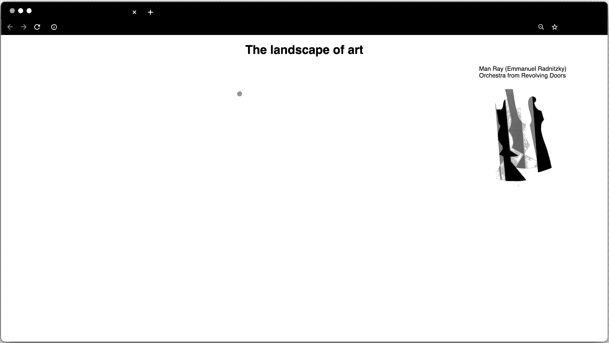
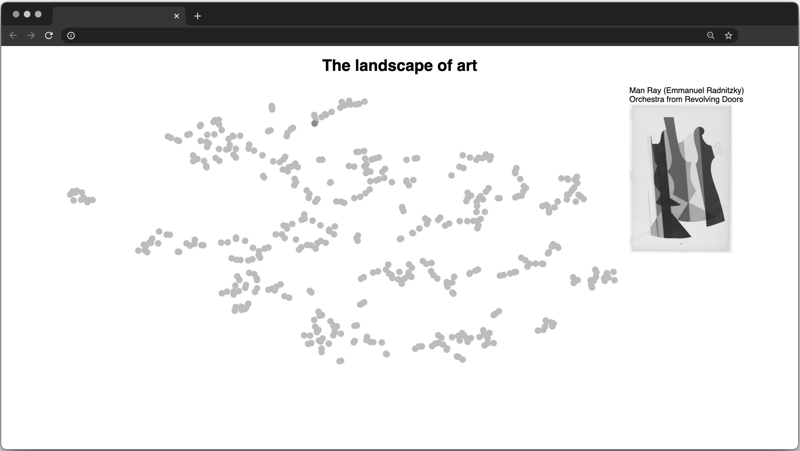
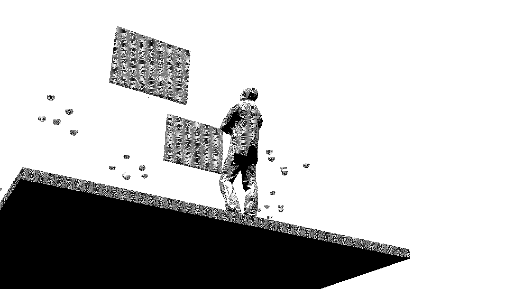
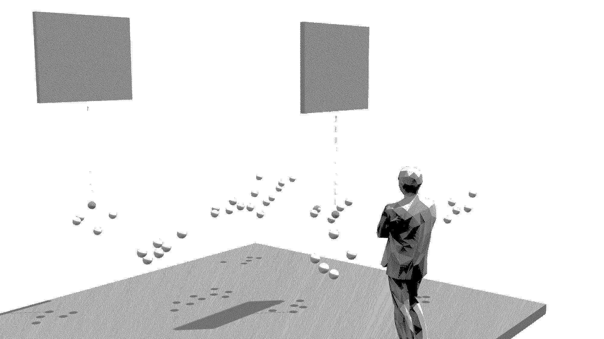

Art in Space
At its core, this project was an attempt to explore more intuitive ways of navigating high-dimensional data. We started by scraping the MoMa's collection for artwork. Afterwards, we used the dimensionality-reduction technique, t-SNE, to plot a convolutional neural network's internal representation of the artwork. Similair kinds of artwork appeared to cluster in two dimensions, and so the representation became the basis for a sketch interface, built with React.
A year or so later, while I was studying at the Architectural Association, we had the opportunity to extend this project to a sketch virtual reality experience, built with Unity. We represented the points as spheres and raised them to a natural height. We also defined some interaction: users could grab spheres, resulting in a projection of both the artwork and its metadata; users could likewise move spheres, allowing them to break the determinism of the model on the data's spatial organisation. Here is the executable: [GitHub]